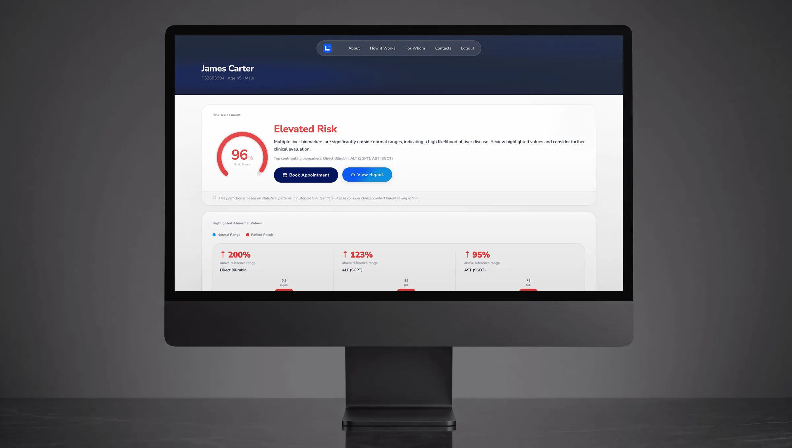
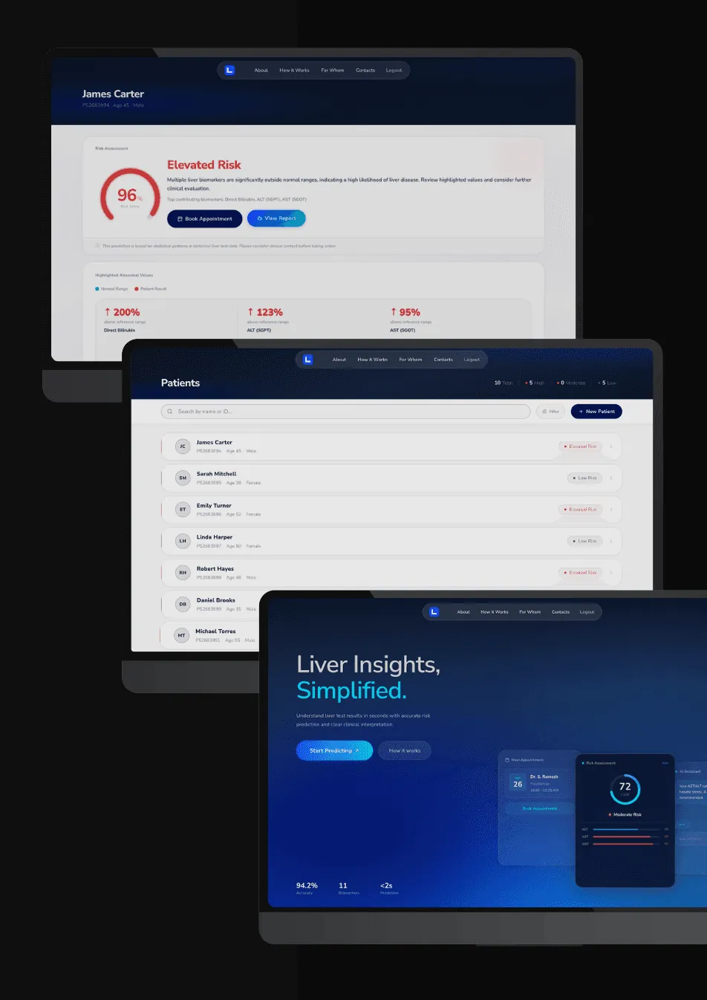
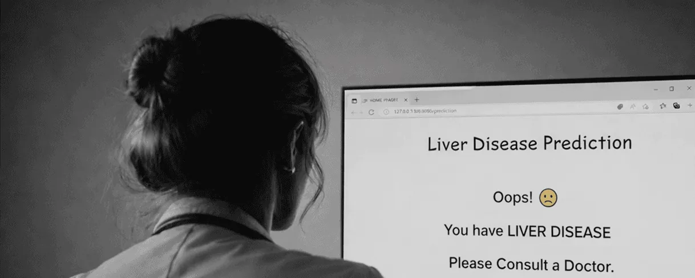
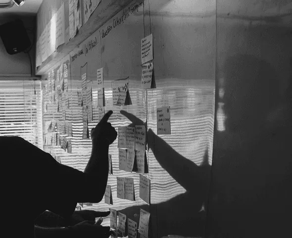
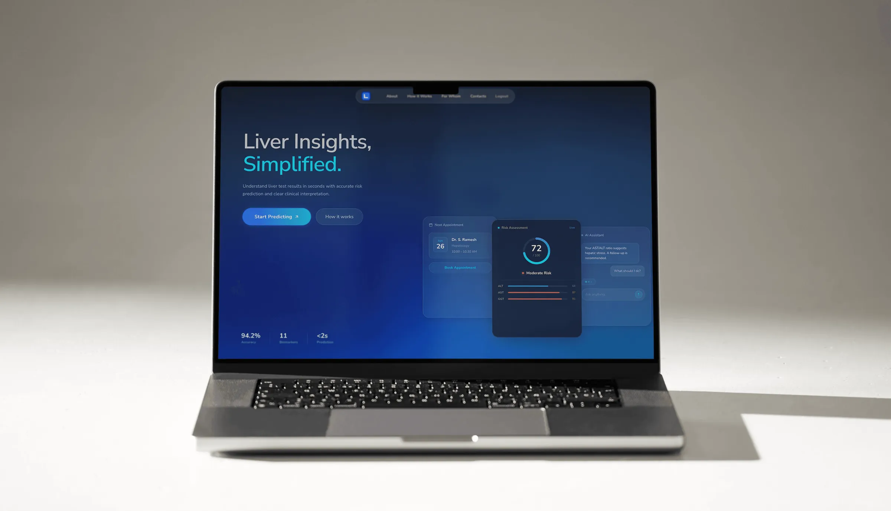

Livr - A calm ML decision-support tool for liver disease in low-resource clinics

Underlying ML model achieved
~77%
accuracy in early disease severity detection
Redesigned flow improved usability by
~60%
during internal evaluation

This project started with an accurate ML prototype that failed to fit real clinical workflows.
My role was to redesign it into a practical decision-support tool that seamlessly supported clinical decision-making.
Real-world constraints
Semi-urban clinics with intermittent connectivity and 5–10 minute consultations
Core gap
The ML model was accurate, but clinicians couldn’t confidently interpret or act on the output
Design focus
Reframe prediction into a clear, defensible clinical decision-support experience
The Problem
In 2022, our team built an accurate liver disease prediction model but the interface felt like a technical demo, not a clinical tool.

- Binary “yes/no” predictions with no explanation
- Long, unstructured data entry
- No guidance on what to do next
- Designed for ideal infrastructure, not real clinics
The model
worked.
The product
didn’t.
What synthesis revealed
When I reviewed the original prototype and mapped clinician feedback against real clinic workflows, a clear pattern emerged.
Trust
Clinicians needed to understand why a patient was high risk
Time
Dense screens didn't survive a 5-minute consult
Action
Predictions without clear next steps weren’t actionable
The trade-off
I chose
clarity over
feature
breadth.
Deferred
- EMR integrations
- Advanced analytics
Built now
- Explanation-rich results
- Guided data entry with real-time prediction
- Interpretation support
- Embedded follow-up actions

Designing for real clinical decisions means supporting uncertainty, not just prediction.
Design tension
Adding a chatbot was initially uncomfortable it risked feeling excessive but removing it revealed that clinicians had no place to resolve interpretation questions without leaving the flow.
One patient → a running caseload
- Scan roster, filter by risk tier
- Tap New Patient
- Enter labs by clinical category
Interpretation
Risk you can inspect, not just read
Every abnormal value shown against its normal range, each with a plain-language clinical read.
Action
A referral that gets kept
Doctor discovery, live scheduling, confirmed with a real reference ID.
Trust
The chatbot lives inside the evidence
Opens straight into the patient's own biomarker panel, no separate conversation needed.
Landing page
Outcome
Prediction became a decision, not an endpoint
Interpretation and follow-up were built directly into the flow.
The experience became one calm, linear path
Lower information density, fewer steps, and less cognitive load per screen.
Usability improved by ~60% in internal evaluations
Reframed the system from a research demo into practical clinical decision support.

In healthcare,
clarity isn’t a
feature.
It’s the product.
Key takeaway
What surprised me most was how quickly confidence returned once uncertainty was designed out.
Reference
Images from Unsplash.com and ChatGPT.
*The underlying ML model was research-based and not deployed in production
*Redesign completed independently to explore how such a system could function as a real clinical decision-support tool.